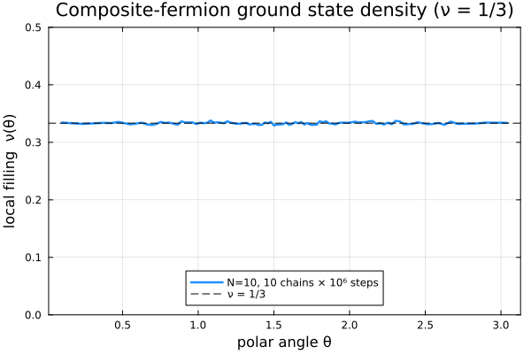

CFsOnSphere.jl
Composite-fermion wavefunctions on the sphere, for the fractional quantum Hall effect.
CFsOnSphere builds Jain–Kamilla projected and unprojected composite-fermion (CF) and parton wavefunctions on the Haldane sphere, and samples them with a Metropolis–Hastings–Gibbs Monte Carlo walk to compute densities, pair correlations, energies, and overlaps. The projection uses the quaternion/rotation reformulation of Jain–Kamilla projection (Phys. Rev. Lett. 134, 156501 (2025)), which is far cheaper and more numerically stable than the traditional mixed-derivative approach.
If you are new here, read the Physics background for the concepts and notation, then work through the Tutorials.
Installation
The package is not yet in the General registry, so install it from the repository:
using Pkg
Pkg.add(url="https://github.com/mytraya-gattu/CompositeFermions.git")or, for development, clone it and Pkg.develop the checkout:
git clone https://github.com/mytraya-gattu/CompositeFermions.gitusing Pkg; Pkg.develop(path="CompositeFermions")Quickstart
A complete program that builds the $\nu = 1/3$ composite-fermion ground state, samples it with Monte Carlo, and plots its density on the sphere. We go through it one block at a time — each block is independent and links to where it is explained in full.
1. Choose the state. A Jain state is fixed by three integers: the number of particles N, the number of filled Λ-levels n, and the Jastrow power p (the number of attached vortices, even). They set the filling $\nu = n/(pn+1)$. cf_ground_state_lm returns the effective monopole strength Qstar and the occupied $(L, L_z)$ orbitals — see Physics background for what these mean.
using CFsOnSphere, Random, LinearAlgebra, Statistics
N, n, p = 10, 1, 2 # n=1, p=2 → ν = 1/3
Qstar, l_m_list = cf_ground_state_lm(N, n, p)2. Define the sampling weight. We sample positions with probability $|\Psi|^2$. The walker works with a log probability, and $|\Psi|^2 = |\det|^2|\text{Jastrow}|^2$, so the log-pdf reads the projected Slater determinant (Ψproj) and the cached Jastrow log off the wavefunction object:
logpdf(ψ) = 2.0 * real(logdet(ψ.slater_det) + ψ.jastrow_factor_log)3. Run one Metropolis chain. Allocate two wavefunction buffers (current + proposed), thermalize with gibbs_thermalization! (which also tunes the step size σ), then sweep: proposal moves one particle, update_wavefunction! updates that column, and on accept/reject we keep the better state. update_density! accumulates an equal-area $\theta$ histogram. (This is exactly the loop from Tutorial 1, wrapped in a function.)
function run_chain(seed; n_therm = 100_000, n_steps = 1_000_000, n_bins = 100)
rng = MersenneTwister(seed)
ψ, ψn = Ψproj(Qstar, p, N, l_m_list), Ψproj(Qstar, p, N, l_m_list)
θ, ϕ = rand_θ_ϕ_gen(rng, N); θn, ϕn = copy(θ), copy(ϕ)
it, σ, _, _ = gibbs_thermalization!(rng, ψ, ψn, θ, ϕ, θn, ϕn, π/sqrt(12), logpdf, n_therm)
θmesh = acos.(LinRange(1.0, -1.0, n_bins + 1)) # equal-area bin edges
dens = zeros(n_bins); lpc = logpdf(ψ)
for _ in 1:n_steps
θn[it], ϕn[it] = proposal(rng, θ[it], ϕ[it], σ)
update_wavefunction!(ψn, θn[it], ϕn[it], it)
if logpdf(ψn) - lpc >= log(rand(rng))
θ[it], ϕ[it] = θn[it], ϕn[it]; copy!(ψ, ψn, it); lpc = logpdf(ψ)
else
θn[it], ϕn[it] = θ[it], ϕ[it]; copy!(ψn, ψ, it)
end
update_density!(θmesh, θ, dens)
it = mod(it, N) + 1
end
Agrid = 2π .* (cos.(θmesh[1:end-1]) .- cos.(θmesh[2:end]))
return θmesh, dens ./ n_steps ./ Agrid
end4. Average several independent chains. Independent chains (different seeds) reduce the Monte Carlo error; ten chains of a million steps give a smooth estimate.
results = [run_chain(seed) for seed in 1:10] # 10 independent chains
θmesh = results[1][1]
θc = 0.5 .* (θmesh[1:end-1] .+ θmesh[2:end]) # bin centres
density = mean(last.(results)) # number density on the unit sphere5. Convert to the local filling and plot. It is natural to report the density in magnetic units — the local filling $\nu(\theta)$ — whose bulk value is the filling fraction $\nu$ itself. With the monopole strength $Q_{\text{shift}} = N/2\nu$ for this state, $\nu(\theta) = 2\pi\,n(\theta)/Q_{\text{shift}}$. Plotting from $0$ keeps the flat plateau in context (rather than zooming into the per-mille fluctuations).
using Plots
ν = n / (p*n + 1) # target filling = 1/3
Qshift = N / (2ν) # monopole strength for this filling
νθ = density .* (2π / Qshift) # local filling ν(θ): flat value = ν
plot(θc, νθ; lw = 2, xlabel = "θ", ylabel = "local filling ν(θ)", ylims = (0.0, 0.5),
label = "N=10, 10 chains × 10⁶ steps")
hline!([ν]; ls = :dash, label = "ν = 1/3")Running the program above produces:

The local filling is a flat plateau at $\nu = 1/3$ across the sphere — the hallmark of the incompressible liquid. From here, Tutorial 1 explains every step in detail and adds the pair correlation; later tutorials cover excitations, higher fillings, fast unprojected sampling, partons, and energies.
What's inside
| Wavefunction | Description | Fast rank-1 updates? |
|---|---|---|
Ψproj | Jain–Kamilla projected CF state | No (a move changes every column) |
Ψparton | Jain–Kamilla projected parton state | No |
Ψunproj | unprojected det·Jastrow (single-particle orbitals) | Yes (Sherman–Morrison) |
ΨoneLL | bare Jastrow (Laughlin) | n/a |
Where to go next
- Physics background — LLL, composite fermions, the Jain–Kamilla projection, and the meaning of
Qstar,p, andl_m_list. - Tutorials — hands-on, example-driven walkthroughs.
- API reference — every exported function and type.
- Architecture — how the code is organized (for contributors).
- Theory & citation — the method, the derivation, and how to cite.